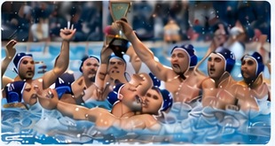
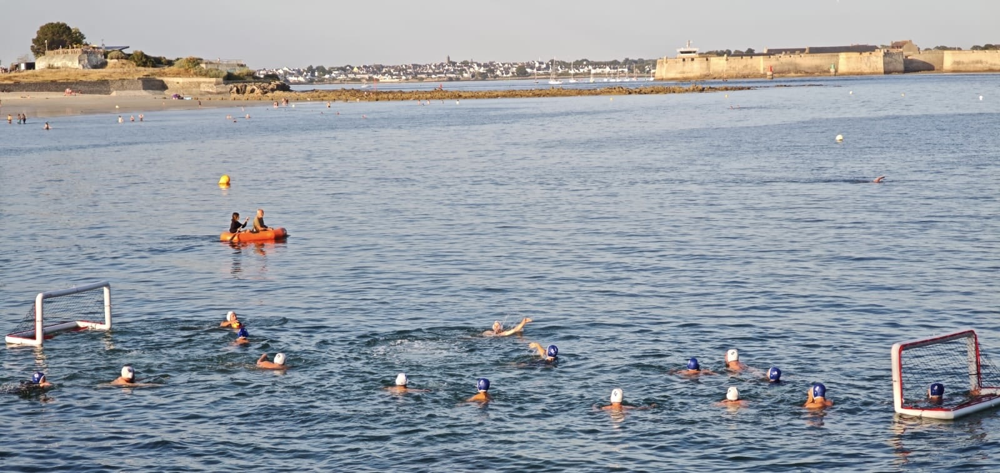

🌊 Entraînement
1 entraînement hebdomadaireLundi 20h00 – 22h15
Piscine Aquapaq de Quimperlé.
Pour tous les niveaux, dès lors que l’on sait nager.


Lundi 20h00 – 22h15
Piscine Aquapaq de Quimperlé.
Pour tous les niveaux, dès lors que l’on sait nager.

Équipe engagée dans le championnat de Bretagne, remporté pour la dernière fois par Les Branchy’s en 2024 .

Au printemps et en été, beach water-polo à Larmor-Plage, secteur Toulhars / Pointe des Blagueurs.
Chargement des actualités…
2 rue Aimé Césaire
29300 Quimperlé
Petit-Port, près de la plage de Toulhars
Voir sur Google Maps →